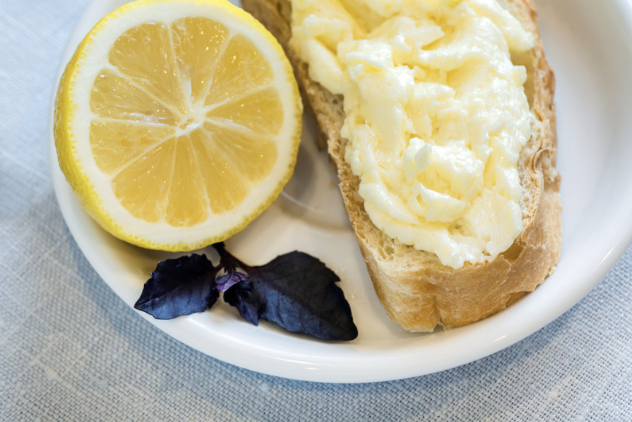

4 Extra Large Free Range Eggs
3/4 cup sugar
1/2 cup lemon juice
2 tsp lemon rind, finely grated
125g butter, chopped
1. Place eggs and sugar into a heatproof bowl.
2. Place bowl over a pan of barely simmering water and whisk constantly until sugar has dissolved.
3. Add lemon juice, lemon rind and butter. Whisk mixture for 20 minutes until smooth and the butter has melted and thickened enough to coat the spoon. Do not allow the mixture to boil as it will curdle.
4. Pour warm mixture into hot sterilised jars and seal immediately.
Enjoy your latest add-on for anything bread-related!
Click here to go back home.